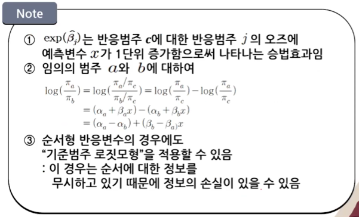
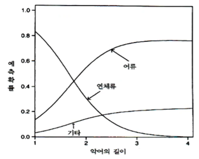

제9강 로지스틱 회귀모형(4)
학습목표
- 명목형 반응변수에 대한 기준범주 로짓모형을 설명할 수 있다.
- 순서형 반응변수에 대한 누적 로짓모형을 설명할 수 있다.
- 대응쌍 자료에 대해서 주변동질성을 검정할 수 있다.
01 명목형 반응변수들에 대한 기준범주 로짓 모형
명목형 반응의 로짓모형
- 다범주 로짓모형
- 명목형 반응변수 Y가 범주 1,2,3,...,c 를 갖는 경우(c>2)
- 각 범주에 대응하는 반응확률:
- n명의 관측치를 c개 범주에 할당시키는 표본모형
→ 다항분포(Multinomial Distribution)를 따름
1. 기준범주를 이용한 로짓 모형
- 기준범주 로짓
-
- 임의로 하나의 기준범주(Baseline-category)를 선택한 후 이 범주와 나머지 각 반응범주와 짝을 지어 로짓을 정의함
- 기준범주 로짓(마지막 범주 c가 기준일 때)
-
- 예측변수 x를 가진 기준범주 로짓모형
"각 로짓에 대해서 서로 다른 모수가정"
-
-

2. 예제: 악어의 먹이 선택
- 미국 플로리다 주의 59마리 악어의 길이(미터)와 주요 먹이
- 독립변수(X): 길이
- 반응변수(Y): 주요 먹이 - F=어류(Fish), I=연체류(Invertebrates), O=기타(Others)
Gators = read.table("http://www.stat.ufl.edu/~aa/cat/data/Alligators.dat")
library(VGAM)
fit = vglm(y~x, family=multinomial, data=Gators)
coef(fit, matrix=TRUE)
summary(fit)
- 기준범주 로짓모형에 대한 추정 결과
| 모수 | 어류/기타 | 연체류/기타 |
|---|---|---|
| 절편 | 1.618 | 5.697 |
| 길이 | -0.110 | -2.465 |
- Y="주요 먹이", x="악어의 길이", c=3 인경우
- 큰 악어일수록 "연체류(2)" 보다 "어류(1)"를 선호하는 경향이 있음
- 길이가 x미터인 악어세 비해 길이가 x+1 미터인 악어의 주요 먹이는 "연체류"가 아님
- "어류"일 오즈의 추정값은 배 임
fit2 = vglm(y~x, family=multinomial(refLevel="I"), data=Gators)
summary(fit2)
confint(fit2, method="profile")
| 모수 | 어류/연체류 | 기타/연체류 |
|---|---|---|
| 절편 | -4.080 | -5.697 |
| 길이 | 2.355 | 2.465 |
3. 반응확률의 추정
-
- 그래서 결과는 다음과 같다.
-
악어의 주요 먹이 선택에 대한 예측확률

4. 예제: 사후 세계에 관한 연구
- 사후 세계에 관한 연구
| 인종 | 성별 | 믿는다 | 잘 모르겠다 | 믿지 않는다 |
|---|---|---|---|---|
| 백인 | 여성 | 371 | 49 | 74 |
| 백인 | 남성 | 250 | 45 | 71 |
| 흑인 | 여성 | 64 | 9 | 15 |
| 흑인 | 남성 | 25 | 5 | 13 |
-
-
"아니오" 범주를 기준으로 설정한 경우 "사후세계에 대한 믿음에 대해 성별과 인종 간에 교호작용 효과는 없다"고 가정함
Afterlife = read.table("http://www.stat.ufl.edu/~aa/cat/data/Afterlife.dat", header=TRUE)
library(VGAM)
# 성별과 인종을 모두 포함
fit = vglm(cbind(yes, undecided, no) ~ gender + race, family=multinomial, data=Afterlife)
summary(fit)
## 인종만 모두 포함
fit.race = vglm(cbind(yes, undecided, no) ~ race, family=multinomial, data=Afterlife)
deviance(fit.race)
lrtest(fit, fit.race)
- :"사후세계 믿음에 대해 성별 주효과는 없다"는 가설에 대한 검정
5. 이산형 선택모형

02 순서형 반응변수들에 대한 누적 로짓 모형
- 순서형 반응변수에 대한 로짓 모형
-
반응범주들이 순서형인 경우는 순서를 고려한 로짓을 정의할 수 있음
→ 순서를 고려한 로짓 모형은 해석이 간단하고 보통의 다범주 로짓 모형보다 더 좋은 검정력을 갖게 됨 -
누적확률(cumulative probability)
-
누적로짓(cumulative logit)
-
c=3인 경우의 누적 로짓
-
1. 비례오즈 누적 로짓 모형
- 예측변수 X에 대하여
- ⇒"1,2,...,j 의 범주들을 하나의 범주로 합하고, j+1 부터 c까지의 범주를 다른 하나의 범주로 보는 로지스틱 회귀모형과 비슷함"
- 각각의 누적 로짓에 대해서 서로 다른 절편 와 같은 기울기 를 가정함
- 4개의 반응범주와 하나의 연속형 예측변수 x에 대한 비례오즈 모형

-
"각각의 j에 대해 의 효과가 같다는 것은 세 개의 곡선이 같은 모양을 갖는다는 의미임"
-
X가 a와 b일 떄 오즈비
-
여기에 로그를 취하면
-
→ 어떤 주어진 범주 이하의 반응에 대한 오즈는 x가 한 단위 증가하면 배만큼 증가함
→ 비례오즈 모형(proportional odds model) -
만족 ⇔ X와 Y는 통계적으로 독립
2. 예제: 정치성향과 가입정당의 관련성
- 개인의 정치성향과 가입정당의 관련성 자료
| 성별 | 정당 | 매우 진보적 | 약간 진보적 | 중간 | 약간 보수적 | 매우 보수적 |
|---|---|---|---|---|---|---|
| 여성 | 민주당 | 25 | 105 | 86 | 28 | 4 |
| 여성 | 공화당 | 0 | 5 | 15 | 83 | 32 |
| 남성 | 민주당 | 20 | 73 | 43 | 20 | 3 |
| 남성 | 공화당 | 0 | 1 | 14 | 72 | 32 |
- 정치성향 5점 척도
- 1:매우 진보적, 2:약간 진보적, 3:중간, 4:약간 보수적, 5:매우 보수적
- 가입정당
- 1:공화당, 0:민주당
- 성별
- 1:남성, 0:여성
Polviews = read.table("http://www.stat.ufl.edu/~aa/cat/data/Polviews.dat", header=TRUE)
library(VGAM)
fit = vglm(cbind(y1,y2,y3,y4,y5) ~ party + gender, family=cumulative(parallel=TRUE), data=Polviews)
summary(fit)
-
- 비례오즈 누적로짓 모형에서 절편은 관심모수가 아님
-
분석결과 해석
- ① 비례오즈 로짓 모형에서 에 대한 ML 추정
→ 고정된 j에 대하여 진보적 방향으로 응답할 오즈는 민주당원에 비해 공화당원일 때 배임
→ 개인의 가입정당과 정치성향은 강한 관련성이 있으며 민주당원이 공화당원에 비해 더 진보적인 성향을 띠고 있다.
- ① 비례오즈 로짓 모형에서 에 대한 ML 추정
attach(Polviews)
data.frame(gender, party, fitted(fit)) # y1=very lib, y5=very conserv
- 모형의 모수에 대한 추론
# removing party effect
fit2 = vglm(cbind(y1,y2,y3,y4,y5)~gender, family=cumulative(parallel=TRUE), data=Polviews)
lrtest(fit, fit2)
confint(fit, method="profile")
- 가입정당과 정치성향은 강한 연관성이 존재한다는 강한 근거
3. 순서형 분석의 검정력 증가
- 순서형 변수들에 대한 분할표에서 독립성 검정을 할 때 순서형 검정이 모든 변수들을 명목형 변수로 처리하는 카이제곱검정에 비해 더 적절하고 큰 검정력을 가짐
- Y의 순서정보를 이용하는 누적 로짓모형이 Y를 명목형 변수로 간주하여 분석하는 기준범주 로짓모형보다 더 큰 검정력을 가집
- 적합도가 다소 떨어지더라도 좀 더 간단한 모형이 효과의 대부분을 설명할 수 있다면 간단한 모형을 사용하는 것이 바람직함
4. 예제: 총 가구 수입과 행복도
- 흑인에 대한 행복도와 총 가구 수입 자료(괄호 안 도수는 백인에 대한 자료)
| 총 가구 수입 | 행복하지 않음 | 좀 행복함 | 아주 행복함 |
|---|---|---|---|
| 평균 이하 | 37(128) | 90(324) | 45(107) |
| 평균 | 25(66) | 93(479) | 56(295) |
| 평균 이상 | 6(35) | 18(247) | 13(184) |
- Y=행복도
- 1=행복하지 않음, 2=좀 행복함, 3=아주 행복함
- x=총 가구수입(양적 변수로 처리)
- 1=평균 이하, 2=평균, 3=평균 이상
- 비례오즈 모형
- 이므로 총 수입이 증가할수록 "행복하지 않음" 범주가 나올 경향은 점점 감소하는 것을 알 수 있음
Happy = read.table("http://www.stat.ufl.edu/~aa/cat/data/Happy.dat", header=TRUE)
library(VGAM)
fit = vglm(cbind(y1,y2,y3) ~ income, family=cumulative(parallel=TRUE), data=Happy)
fit0 = vglm(cbind(y1,y2,y3) ~ 1, family~cumulative(parallel=TRUE), data=Happy) # null model
lrtest(fit, fit0)
- 총 가구수입을 명목형으로 처리하는 모델
fit2 = vglm(cbind(y1,y2,y3)~factor(income), family=multinomial, data=Happy)
fit0 = vglm(cbind(y1,y2,y3)~1, family=multinomial, data=Happy)
lrtes(fit2, fit0)
- 가구수입에 대한 선형효과와 같은 가정을 하지 않은 모형임
- 귀무가설 하에서 더 많은 모수를 사용하기 때문에 검정력이 높지 않음
5. 잠재변수 선형모형과 누적연결함수 관계
- 누적 로짓 모형에서 비례 오즈 형태를 가정하면 하나의 예측변수 효과는 c-1 개의 누적 로짓 모형 식에서 모두 동일하게 됨
- 비례 오즈 구조는 단순 잠재변수모형에 의해서 자동적으로 만들어짐
- 를 연속형 잠재변수라고 하고, 의 절단점을 라고 함
- 잠재변수 의 평균이 설명변수와 관련된 회귀모형을 만족
- 를 연속형 잠재변수라고 할 때
-
- 오차항 이 정규분포이면 이에 대응되는 연결함수는 프로빗(probit) 함수
- 오차항 이 로지스틱 분포(정규분포처럼 종모양, 대칭이나 꼬리부분이 더 두터움)를 따르면 이에 대응되는 연결함수는 로짓(logit) 함수가 되고 잠재변수 모형은 누적 로짓 모형이 됨
6. 반응범주 선택에 대한 불변성
- 잠재변수 선형모형과 누적 로짓 모형에서 비례 오즈 형태를 가정한다면 Y의 범주를 어떻게 선택하든지 상관없이 효과에 대한 모수는 변하지 않음
- 정치성향을 측정한 연속형 변수에 대해서 이산형 변수로 바꿀 때 (진보적, 중간, 보수적) 범주로 나누든지 또는 (매우 개방적, 약간 개방적, 약간 보수적, 매우 보수적) 범주로 나누든지 상관없이 모수의 효과는 동일하게 됨
03 대응쌍 자료의 주변동질성
- 대응쌍 자료의 주변동질성
- 동일한 대상에 대해서 두 번의 조사를 한 경우나 한 표본의 개체와 다른 표본의 개체간에 자연스러운 짝 관계(pairing, 쌍)가 있는 경우에 만들어진 대응쌍 자료의 분석방법
- 대응쌍이 흔히 발생하는 경우는 각 개체에 대해서 반복적으로 관측하는 경우로, 예를 들어 경시적(longitudinal) 연구에서 동일한 대상을 시간의 흐름에 따라 반복적으로 관측하는 경우임
- 주변동질성 검정의 문제를 다룸
1. 사례 ①: 환경개선과 관련한 일반사회조사 사례
- 1144명을 대상으로 환경개선을 위해서 (1)더 높은 세금을 지불할 의향이 있는지 (2)생활수준 긴축을 받아들일 의향이 있는지 응답하도록 함
- 조사 결과
| 더 많은 세금 지불 | 생활수준의 긴축_찬성 | 생활수준의 긴축_반대 | 합계 |
|---|---|---|---|
| 찬성 | 227 | 132 | 359 |
| 반대 | 107 | 678 | 785 |
| 합계 | 334 | 810 | 1144 |
-
특성상 두 설문항목에 대한 응답결과는 서로 종속되어 있음(표본 오즈비=10.9)
-
더 많은 세금 지불에 "찬성"한 비율 = 359 / 1144 = 0.314
-
생활수준의 긴축에 "찬성"한 비율 = 334 / 1144 = 0.292
-
주요 관심사
⇔ 주변동질성(marginal homogeneity)
→ 주변동질성 을 검정하는 문제는 을 검정하는 문제로 바꿔서 풀 수 있다.
사례②: 신약효과 실험
- 86명의 실험 대상자에 대해서 각각 랜덤하게 (신약→가짜약) 또는 (가짜약→신약) 순으로 복용하게 한 후 그 효과를 조사함
- 실험결과
| 구분 | 가짜약_S | 가짜약_F | 계 |
|---|---|---|---|
| 신약_S | 12 | 49 | 61 |
| 신약_F | 10 | 15 | 25 |
| 계 | 22 | 64 | 86 |
- 확률분포
| S | F | ||
|---|---|---|---|
| S | |||
| F | |||
| 1.0 |
- 주요 관심사
- 에 대한 추론 ⇔ 주변동질성 만족 여부
3. 맥니마 검정(McNemar Test)
- : 주변동질성 만족
⇒ "대응쌍 자료에서 귀무가설을 만족하는 경우는 와 은 같은 기대도수를 갖게 됨"
-
으로 정의하면 귀무가설이 성립할 때
-
검정통계량
또는
-
맥니마 검정 결과
- ① 환경개선 관련 일반 사회조사
→ - ② 신약효과 사례
→
- ① 환경개선 관련 일반 사회조사
-
에 대한 신뢰구간 작성
- 의 추정량:
- SE =
-
95% 신뢰구간: